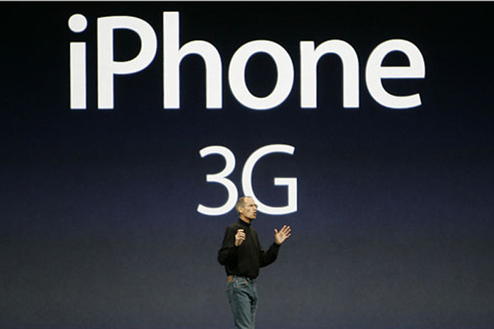
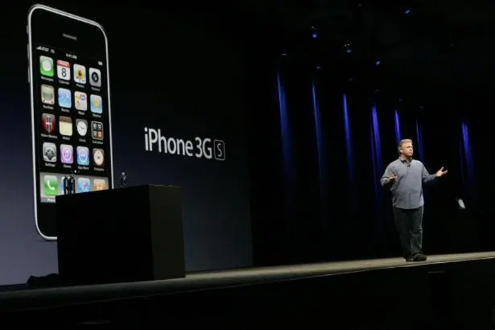
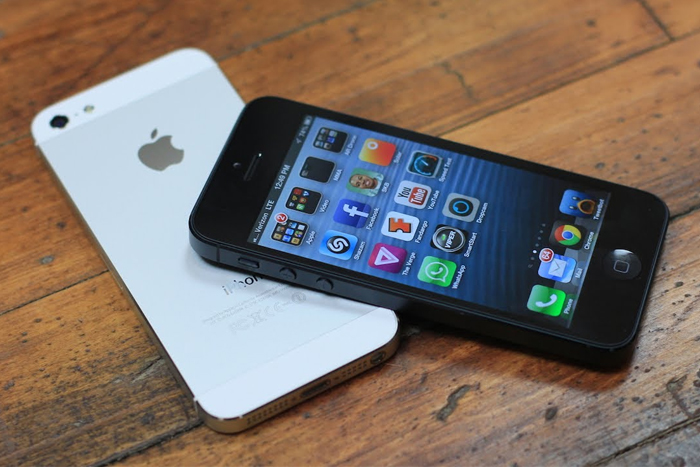

A Decade of iPhone
Timeline - The Beginning
-
Steve Jobs Reveals The iPhone
January 9, 2007Steve Jobs introduced the first iPhone on stage during their annual Worldwide Developers Conference. The original iPhone featured a 3.5” display with multitouch support that no one had ever seen on a smartphone before. It also had a software keyboard instead of a plastic, physical keyboard. Steve Jobs initially introduced the iPhone as three separate devices: A "widescreen iPod with touch controls"; a "revolutionary mobile phone"; and a "breakthrough Internet communicator.”
-
The iPhone 3G and The App Store
June 9, 2008  -
The iPhone 3GS
June 19, 2009  -
The iPhone 4 and Facetime
June 7, 2010The iPhone 4 had a new design with slightly larger screen. It had new features never seen before in a smartphone; a high-resolution display, dual camera system and also a new type of video communication called FaceTime. This is also the one of the last devices Steve Jobs worked on before his death.
-
The iPhone 4S and Siri
October 4, 2011 -
The iPhone 5
September 12, 2012  -
The iPhone 5S
September 10, 2013